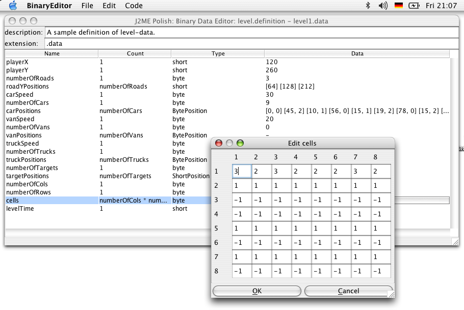

Eine Tour durch J2ME Polish
Robert Virkus
Enough Software
Diese Präsentation wurde mit S5 erstellt.
Vielen Dank an Eric Meyer für dieses grossartige Tool!
Navigation:
Einfach mit der Maus klicken oder die Pfeiltasten zur Navigation nutzen.
Klicken Sie auf den untenstehenden "J2ME Polish"-Link um zur Hauptsteite zurückzukehren.
Was ist drin?
J2ME Polish ist eine hochintegrierte Kollektion von Werkzeugen für die Entwicklung von J2ME Anwendungen:
- Build Werkzeuge erzeugen die Anwendungen für beliebig viele Zielgeräte und Sprachen aus einen Source-Code-Projekt heraus.
- Die Geräte-Datenbank kann mit dem mächtigen Preprocessing direkt aus Ihrer Anwendung aus genutzt werden.
- Ein Oberfläche (GUI), die ausserhalb des Programmcodes designed werden werden kann - und zwar mit einfachen Textdateien (CSS).
- Hilfsklassen wir BitMapFont oder ArrayList.
- Eigenständige Werkzeuge wie der Editor für die Erstellung und Pflege von binären Daten.
- ...und das ist erst der Start!
J2ME Anwendungen bauen
Mit J2ME Polish können Anwendungen leicht gebaut werden:
- Wählen Sie Ihre Zielgeräte aus - entweder durch einfaches Aufzählen oder durch eine Definition der notwendigen Fähigkeiten wie "unterstützt die WMAPI und die MIDP/2.0 Plattform".
- J2ME Polish preprocessed, kompiliert, obfuskiert und packt die Anwendung für Sie.
- Natürlich kann J2ME Polish auch den jeweiligen Emulator für Sie starten.
- Da die Build Werkzeuge auf Ant basieren, kann J2ME Polish flexibel konfiguriert und in jede IDE integriert werden.
Zusammenstellung der Resourcen
- J2ME Polish fügt Ihrer Anwendung die jeweils gewünschten Resourcen automatisch hinzu.
- Allgemein genutzte Resourcen kommen in den "resources" Ordner.
- Spezialisierte Resourcen können in den entsprechenden Unterordner abgelegt werden, beispielsweise "resources/Nokia", "resources/Siemens/S65" oder "resources/ScreenSize.160+x200+".
- Die Resource Zusammenstellung kann auch feingetunt werden, so dass zum Beispiel MIDI Dateien nur dann eingebunden werden, wenn das Zielgerät MIDI aber keine MP3 Unterstützung bietet.
Lokalisierung
- Eine Lokalisierung ist notwendig, wenn Ihre Anwendung in verschiedenen Regionen vermarktet wird.
- Übersetzungen und andere lokalisierte Resourcen wie Bilder und Sounds können mit J2ME Polish leicht eingebunden werden.
- Sie können Ihre Anwendung mit J2ME Polish ohne jeglichen Overhead lokalisieren, da J2ME Polish Übersetzungen direkt in den Quellcode einbinden kann.
Die Geräte-Datenbank
Die Geräte-Datenbank unterstützt Sie bei der Anpassung Ihrer Anwendung an unterschiedlichen Endgeräte:
- Über 300 J2ME Geräte mit ihren jeweiligen Fähigkeiten wie der Canvas-Grösse, APIs, unterstützte Formate etc sind aufgeführt.
- Sie profitieren nicht nur von der Information, sondern Sie können diese Geräte-Fähigkeiten direkt in Ihrer Anwendung in der Preprocessing-Phase auswerten.
- Da die Datenbank XML basiert ist, kann sie leicht erweitert werden.
Preprocessing
- Preprocessing verändert Ihren Programm-Code bevor er kompiliert wird.
- Durch Preprocessing können Sie Ihre Anwendung an unterschiedlichen Zielgeräte anpassen, ohne die Portabilität Ihrer Anwendung zu verlieren.
- J2ME Polish gibt Ihnen mächtige Preprocessing Direktiven und ein standardisiertes Namen-Schema an die Hand.
- Alle in der Geräte-Datenbank aufgeführten Fähigkeiten können abgefragt und genutzt werden.
//#if polish.midp2 || polish.api.mmapi // okay das Audio-Playback der MMAPI kann genutzt werden: Player player = ... //#endif
GUI (1/2)
- Mit J2ME Polish können Sie Ihre Anwendung mit einfachen CSS Textdateien designen.
- Es ist nicht schwierig:
background-color: rgb(123, 54, 233); - Abhängig vom Item oder Screen können sie viele spezielle CSS Attribute nutzen.
- Sie können Bilder, Bitmap-Fonts, unterschiedliche Hintergründe, Animationen und so weiter nutzen.
- Das komplette Design ist ausserhalb des Programmcodes definiert.
- So können Sie einfach unterschiedliche "Themes" für Ihre Anwendung erstellen, ohne dass der Quellcode geändert werden muss.
- Mit der GUI können Sie sogar MIDP/2.0 Features wie CustomItems auf MIDP/1.0 Geräten nutzen!
GUI (2/2)


Die obigen Screenshots zeigen dieselbe Anwendung mit unterschiedlichen Themes.
Natürlich können Sie Ihre eigenen Items, Hintergründe und so weiter nutzen.
Spiele Engine
- Mit der Spiele-Engine von J2ME Polish können Sie die MIDP/2.0 Spiele API auch auf MIDP/1.0 Geräten nutzen.
- Sie können unterschiedliche Optimierungen wie die Backbuffer-Strategie für den TiledLayer aktivieren.
- Die Spiele-Engine ist hoch optimiert, um alles aus Ihrem Spiel herauszuholen.
- Nutzen Sie einen Quellcode für alle Zielgeräte, egal ob MIDP/1.0 oder MIDP/2.0.
Hilfsklassen
- Einige oft genutzte Hilfsklassen sind nicht unter J2ME nutzbar.
de.enough.polish.util.BitMapFontzeigt beliebige Text mit Bitmap Fonts an.de.enough.polish.util.ArrayListbietet eine schnelle Alternative zum Vector.de.enough.polish.util.TextUtilerleichtert die Handhabe von Strings.
Logging Framework
- Mit dem Logging Framework können Sie normale
System.out.println()-Meldungen auf dem echten Endgerät einsehen. - Sie können unterschiedliche Logging-Level wie "debug", "warn" oder "error" für spezielle Klassen oder Packages aktivieren.
- Definieren Sie Ihre eigenen Logging-Level wie "performance".
- Deaktivieren Sie das Logging komplett für die endgültige Anwendung, damit absolut keine Rückstände in Ihrer Anwendung zurückbleiben.
try {
Connection con = Connector.open( url );
...
} catch (Exception e) {
//#debug error
System.out.println("Verbindung kann nicht aufgebaut werden" + e );
}
Eigentständige Werkzeuge
- Nutzen Sie den binary-editor um strukturierte binäre Dateien wie Level-Dateien zu erstellen und zu pflegen.
- Der font-editor erstellt Bitmap Fonts aus beliebigen True Type Fonts.

Danke!
Sie haben die Tour beendet.
Weitere Schritte:
- Die Features-Übersicht zeigt Ihen die wichtigsten Features auf einem Blick und verlinkt zu den jeweiligen Themengebieten.
- Das Tutorial erklärt Ihnen die Beispielsanwendung und hilft Ihnen bei den ersten Schritten.
- Bitten nutzen Sie die Dokumentation, um alle Details über J2ME Polish zu lernen.
- Vergessen Sie nicht J2ME Polish runterzuladen.